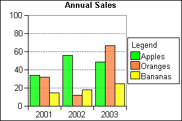
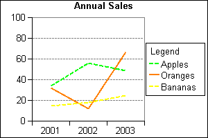
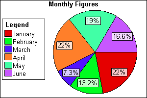
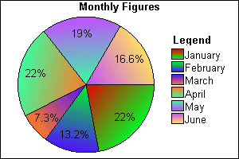
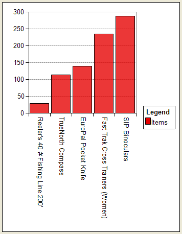
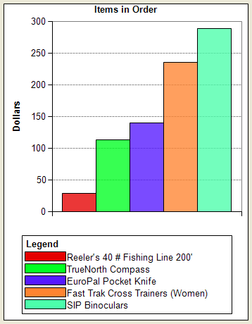
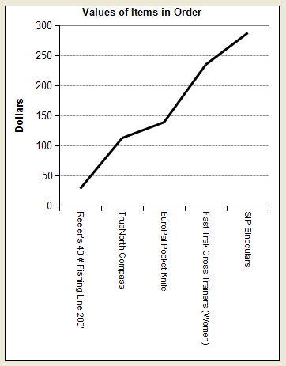
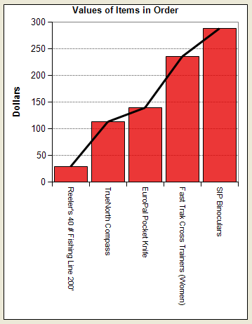
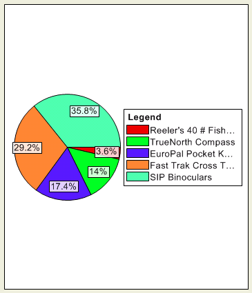
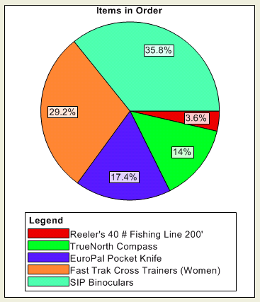

Creating Charts with SimpleChart
The SimpleChart software allows you to:
add bar, line, and pie charts to forms
add bar, line, and pie charts to web pages
update and re-display charts as data changes
The charting functionality is provided by the SimpleChart DLL ( SimpleChart4Lite.dll ). This library provides 4 top level components:
AxisChart ActiveX Control - used to create form based Bar and/or Line charts.
AxisChartGenerator COM Object - used to create web based Bar and/or Line charts.
PieChart ActiveX Control - used to create form based Pie charts.
PieChartGenerator COM Object - used to create web based Pie charts.
 Note : Users of Alpha Anywhere Runtime will have to purchase a license
from Imagio Technology Limited ( http://www.simplechart.net.)
Note : Users of Alpha Anywhere Runtime will have to purchase a license
from Imagio Technology Limited ( http://www.simplechart.net.)
AxisChart ActiveX Control
The AxisChart ActiveX Control allows you to easily create two dimensional bar charts where the length of each bar represents the data values and line charts where each data point is connected to the next using a straight line. You can also use a combination of bar and line series on the same chart (which is why it's called an AxisChart instead of BarChart or LineChart).


PieChart ActiveX Control
The PieChart ActiveX Control allows you to easily create two dimensional pie charts where each segment of the pie represents a data value.


AxisChartDataItem
The AxisChartDataItem object represents a single data point on an axis chart. With the AxisChartDataItem properties you can:
Set the size of the bar (or the line point if the data item is part of a line series) using the Value property.
Set or retrieve the label for the data item using the Name property.
Set whether the chart should show or hide the data item using the Hidden property.
Specify a URL to be called when the chart is shown in a web browser and the user clicks on that data item.
AxisChartDataSeriesItem
The AxisChartDataSeriesItem object represents a single series of data points on an axis chart. For example, if you wanted to chart the sales of apples and oranges each year from 2001 to 2003 then you would uses one AxisChartDataSeriesItem for apples and the other for oranges. Within each series, AxisChartDataItem objects would represent the yearly sales amounts. With the AxisChartDataSeriesItem properties you can:
Choose whether to draw a series as bars or lines.
Set the style, thickness and color of the line if the data series is drawn as a line.
Set the colors or image used to draw each bar if the data series is drawn as bars.
PieChartDataItem
Each PieChartDataItem object corresponds to one segment in a pie chart. With the PieChartDataItem properties you can:
Set the size of the pie segment using the Value property.
Set or retrieve the label for the data item using the Name property.
Change the color of the data item using the Color property.
Specify a URL to be called when the chart is shown in a web browser and the user clicks on that data item.
ChartData Collection
The PieChart Control and the PieChartGenerator Object have a ChartData collection made up of PieChartDataItem objects. Each PieChartDataItem corresponds to one segment in the pie chart.
The collection has Add and Insert methods that allows new data values and their labels to be added to the chart. Data items can be removed from a chart using the Remove and Clear methods.
DataSeries Collection
The AxisChart control and the AxisChartGenerator object have a DataSeries collection made up of AxisChartDataSeriesItem objects. Each AxisChartDataSeriesItem corresponds to group of data points that make up the bars or a line in the axis chart.
The collection has Add and Insert methods for adding new series to the chart. Data series can be removed from a chart using the Remove and Clear methods.
Since a series can be shown using either bars or a line, the Add method is able to add a series item of either type but a large number of parameters are required. Therefore, the collection has two other helper methods, AddBarSeries and AddLineSeries which make adding either bar or line series to the chart easier.
SeriesData Collection
An Axis chart can contain a number of data series which are accessed through the DataSeries collection property of the Axis chart. Each of these data series can themselves contain one or more data items, each of which is represented by an AxisChartDataItem object. Data items within a series are manipulated using the SeriesData collection property of the series.
Each AxisChartDataItem object in the series represents either a bar or a point on a line, depending on which type of series the data is part of.
The SeriesData collection has Add and Insert methods that allows new data items to be added to the chart. Data can be removed from a chart using the Remove and Clear methods.
The following example is based on the invoice_items table of the AlphaSports database. To create a bar chart:
Open the Invoice form in the Form Editor.
Make the form wider, so that there is room for the chart.
Select the ActiveX
 tool from the Toolbox and draw
the rectangle (approximately 3" wide and 4" high) that defines
the chart's boundaries.
tool from the Toolbox and draw
the rectangle (approximately 3" wide and 4" high) that defines
the chart's boundaries.When the Insert ActiveX Control dialog appears, click Filter.
Enter "simple" and click OK.
Select "SimpleChartLite AxisChart4Control" and click Insert.
It would be desirable to refresh the chart each time you read a new record. To do this, right click on the form and select Events > OnFetch.
Create a pointer variable and assign it to the new chart object. This example assumes that the name of the new object is "activex1".
|
dim chart as P chart = activex1.activex.this |
Next, you need to add some data to the chart. Each data element is a pair of values: a number and a label. Modify the script so it has the following code. The inv variable captures the value of the current invoice_number field, which is used in the filter expression of the SET.EXTERNAL RECORD CONTENT GET() method. This method returns the value of the description field from the product table and the value of the extension field from the invoice_items table. The two values are separated by a pipe "|" character, to make them easy to separate.
|
dim chart as P dim list as C dim inv as C chart = activex1.activex.this inv = Invoice_Header->INVOICE_NUMBER list = set.external_record_content_get("items-product", "product->description + '|' + invoice_items->extension", "invoice_items->extension", "invoice_items->invoice_number = " + quote(inv) ) |
Now add the data to the table. Because you will add items to the chart with each OnFetch event, the first step is to clear the chart of any items placed on it by the previous OnFetch event. The chart.DataSeries.clear() statement does this. The chart.DataSeries.AddBarSeries("Items", 0) statement creates a set of data elements named "Items". The FOR EACH ... NEXT loop extracts each value pair from the list. The chart.DataSeries(1).SeriesData.Add(desc, num) statement adds the value pair to the set and the chart.
|
dim chart as P dim list as C dim inv as C dim desc as C dim num as N chart = activex1.activex.this inv = Invoice_Header->INVOICE_NUMBER list = set.external_record_content_get("items-product", "product->description + '|' + invoice_items->extension", "invoice_items->extension", "invoice_items->invoice_number = " + quote(inv) ) chart.DataSeries.clear() ' create one DataSeries for all data points chart.DataSeries.AddBarSeries("Items", 0) for each x in list desc = word(x, 1, "|") num = val(word(x, 2, "|") ) ' add all data points to DataSeries(1) chart.DataSeries(1).SeriesData.Add(desc, num) next chart.refresh() |
At this point your chart should look something like the following. Picture
{kind=link}

A few changes can make the chart more appealing.
Right click the chart while in design mode and select ActiveX Properties... to display the SimpleChartLite AxisChart4 Control Properties dialog.
Display the Appearance tab and enter "Items in Order" into the Caption field.
Display the Axis Options tab and enter "Dollars" into the Unit Axis Label field.
Display the Legend Properties tab and select "3 - LegendBottom" in the Position list.
Click OK and save the form.
The next step is to change the way the data is added to the chart a new data series (or "row") for each product. The script does this by modifying and moving the chart.DataSeries.AddBarSeries(desc, 0) statement inside the loop. It changes the desc argument in the chart.DataSeries(k).SeriesData.Add(" ", num) statement to " " and the 1 to the counter k.
|
dim chart as P dim list as C dim inv as C dim desc as C dim num as N dim k as N = 1 chart = activex1.activex.this inv = Invoice_Header->INVOICE_NUMBER list = set.external_record_content_get("items-product", "product->description + '|' + invoice_items->extension", "invoice_items->extension", "invoice_items->invoice_number = " + quote(inv) ) chart.DataSeries.clear() for each x in list desc = word(x, 1, "|") num = val(word(x, 2, "|") ) ' create a new DataSeries for each data point chart.DataSeries.AddBarSeries(desc, 0) ' add each data point to a different DataSeries chart.DataSeries(k).SeriesData.Add(" ", num) k = k + 1 next chart.refresh() |
The result should look something like this.

The following example is based on the invoice_items table of the AlphaSports database. To create a bar chart:
Open the Invoice form in the Form Editor.
Make the form wider, so that there is room for the chart.
Select the ActiveX
tool from the Toolbox and draw
the rectangle (approximately 3" wide and 4" high) that defines
the chart's boundaries.When the Insert ActiveX Control dialog appears, click Filter.
Enter "simple" and click OK.
Select "SimpleChartLite AxisChart4Control" and click Insert.
It would be desirable to refresh the chart each time you read a new record. To do this, right click on the form and select Events > OnFetch.
Create a pointer variable and assign it to the new chart object. This example assumes that the name of the new object is "activex1".
|
dim chart as P chart = activex1.activex.this |
Next, you need to add some data to the chart. Each data element is a pair of values: a number and a label. Modify the script so it has the following code. The inv variable captures the value of the current invoice_number field, which is used in the filter expression of the SET.EXTERNAL RECORD CONTENT GET() method. This method returns the value of the description field from the product table and the value of the extension field from the invoice_items table. The two values are separated by a pipe "|" character, to make them easy to separate.
|
dim chart as P dim list as C dim inv as C chart = activex1.activex.this inv = Invoice_Header->INVOICE_NUMBER list = set.external_record_content_get("items-product", "product->description + '|' + invoice_items->extension", "invoice_items->extension", "invoice_items->invoice_number = " + quote(inv) ) |
Now add the data to the table. Because you will add items to the chart with each OnFetch event, the first step is to clear the chart of any items placed on it by the previous OnFetch event. The chart.DataSeries.clear() statement does this. The chart.DataSeries.AddLineSeries("Line", 0) statement creates a set of data elements named "Line". The FOR EACH ... NEXT loop extracts each value pair from the list. The chart.DataSeries(1).SeriesData.Add(desc, num) statement adds the value pair to the set and the chart.
|
dim chart as P dim list as C dim inv as C dim desc as C dim num as N dim c as colordefinition chart = activex1.activex.this inv = Invoice_Header->INVOICE_NUMBER list = set.external_record_content_get("items-product", "product->description + '|' + invoice_items->extension", "invoice_items->extension", "invoice_items->invoice_number = " + quote(inv) ) chart.DataSeries.clear() c.name = "Black" chart.DataSeries.AddLineSeries("Line", c.RGB_Value, 3, 0) for each x in list desc = word(x, 1, "|") num = val(word(x, 2, "|") ) chart.DataSeries(1).SeriesData.Add(desc, num) next chart.refresh() |
Save your event script and return to the Form Editor.
Right click the ActiveX control and select ActiveX Properties... .
On the Appearance tab enter "Values of Items in Order" in the Caption field.
On the Legend Properties tab clear the Show Legend check box and click OK.
At this point your chart should look something like the following. Picture
{kind=link}

You can combine the line chart with a bar chart. Change the OnFetch event script as follows. The chart.DataSeries.AddBarSeries("Bar", 0) statement adds the bar data elements. The chart.DataSeries(2).SeriesData.Add(desc, num) statement sets the value of these data elements.
|
dim chart as P dim list as C dim inv as C dim desc as C dim num as N dim c as colordefinition chart = activex1.activex.this inv = Invoice_Header->INVOICE_NUMBER list = set.external_record_content_get("items-product", "product->description + '|' + invoice_items->extension", "invoice_items->extension", "invoice_items->invoice_number = " + quote(inv) ) chart.DataSeries.clear() c.name = "Black" chart.DataSeries.AddLineSeries("Line", c.RGB_Value, 3, 0) chart.DataSeries.AddBarSeries("Bar", 0) for each x in list desc = word(x, 1, "|") num = val(word(x, 2, "|") ) chart.DataSeries(1).SeriesData.Add(desc, num) chart.DataSeries(2).SeriesData.Add(desc, num) next chart.refresh() |
The result should look something like this.

The following example is based on the invoice_items table of the AlphaSports database. To create a bar chart:
Open the Invoice form in the Form Editor.
Make the form wider, so that there is room for the chart.
Select the ActiveX
tool from the Toolbox and draw
the rectangle (approximately 3" wide and 4" high) that defines
the chart's boundaries.When the Insert ActiveX Control dialog appears, click Filter.
Enter "simple" and click OK.
Select "SimpleChartLite PieChart4Control" and click Insert.
It would be desirable to refresh the chart each time you read a new record. To do this, right click on the form and select Events > OnFetch.
Create a pointer variable and assign it to the new chart object. This example assumes that the name of the new object is "activex1".
|
dim chart as P chart = activex1.activex.this |
Next, you need to add some data to the chart. Each data element is a pair of values: a number and a label. Modify the script so it has the following code. The inv variable captures the value of the current invoice_number field, which is used in the filter expression of the SET.EXTERNAL RECORD CONTENT GET() method. This method returns the value of the description field from the product table and the value of the extension field from the invoice_items table. The two values are separated by a pipe "|" character, to make them easy to separate.
|
dim chart as P dim list as C dim inv as C chart = activex1.activex.this inv = Invoice_Header->INVOICE_NUMBER list = set.external_record_content_get("items-product", "product->description + '|' + invoice_items->extension", "invoice_items->extension", "invoice_items->invoice_number = " + quote(inv) ) |
Now add the data to the table. Because you will add items to the chart with each OnFetch event, the first step is to clear the chart of any items placed on it by the previous OnFetch event. The chart.DataSeries.clear() statement does this. The chart.DataSeries.AddBarSeries("Items", 0) statement creates a set of data elements named "Items". The FOR EACH ... NEXT loop extracts each value pair from the list. The chart.DataSeries(1).SeriesData.Add(desc, num) statement adds the value pair to the set and the chart.
|
dim chart as P dim list as C dim inv as C dim desc as C dim num as N chart = activex1.activex.this inv = Invoice_Header->INVOICE_NUMBER list = set.external_record_content_get("items-product", "product->description + '|' + invoice_items->extension", "invoice_items->extension", "invoice_items->invoice_number = " + quote(inv) ) chart.ChartData.clear() for each x in list desc = word(x, 1, "|") num = val( word(x, 2, "|") ) chart.ChartData.add(desc, num, 0) next chart.refresh() |
At this point your chart should look something like the following. Picture

A few changes can make the chart more appealing.
Right click the chart while in design mode and select ActiveX Properties... to display the SimpleChartLite PieChart4 Control Properties dialog.
Display the Appearance tab and enter "Items in Order" into the Caption field.
Display the Legend Properties tab and select "3 - LegendBottom" in the Position list.
Click OK and save the form.
|
dim chart as P dim list as C dim inv as C dim desc as C dim num as N chart = activex1.activex.this inv = Invoice_Header->INVOICE_NUMBER list = set.external_record_content_get("items-product", "product->description + '|' + invoice_items->extension", "invoice_items->extension", "invoice_items->invoice_number = " + quote(inv) ) chart.ChartData.clear() for each x in list desc = word(x, 1, "|") num = val( word(x, 2, "|") ) chart.ChartData.add(desc, num, 0) next chart.refresh() |
The result should look something like this.

See Also
SimpleChart4.CHM, SimpleChart Style Xdialog, Placing SimpleCharts on a Web Page